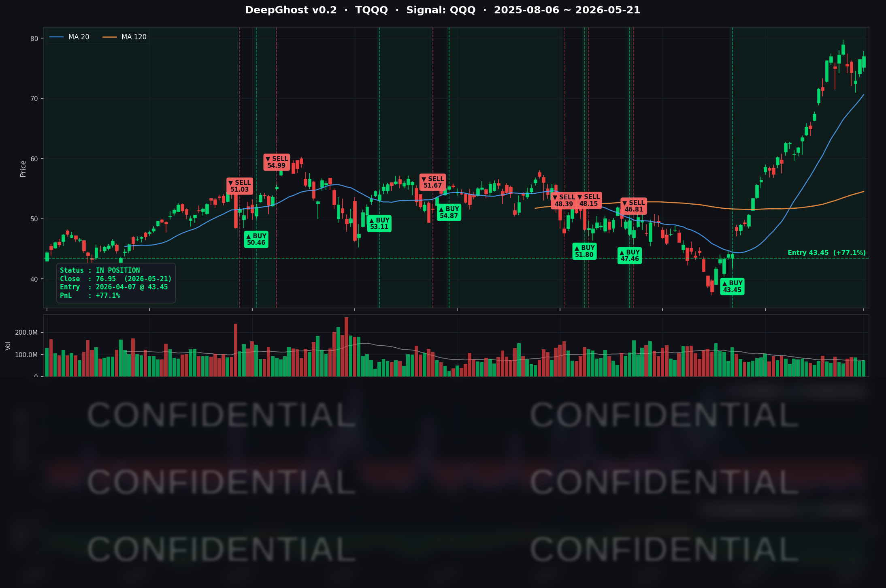

종전 합의가 검토되고 있다는 소식에 유가/금리가 안정되고 주식이 급반등 했습니다.
엔비디아가 트리플 비트에도 약세입니다. 시장은 참 어렵습니다. 보이는 것이 다가 아닙니다.
그러니, 예측하려고 하면 필패 입니다.
어려운 상황일수록 시장에서 한발 떨어져 룰대로만 매매하는 습관을 들여야 합니다.
📊 오늘의 매매 신호
| 항목 | 내용 |
|---|---|
| 오늘 할 일 | ✅ 아무것도 안 해도 됩니다 |
| 포지션 상태 | 📈 TQQQ 보유 중 (IN POSITION) |
| 매수 진입일 | 2026-04-07 (44일째) |
| 진입가 → 현재가 | $43.45 → $76.95 |
| 현재 포지션 수익 | +77.10% |
TQQQ 시그널 — IN POSITION
현재 상태: 매수 포지션 유지 중 | 누적 수익률 +77.10%

신규 진입 하시려는 분들께 드리는 당부는, 아직 추세 상승이 꺽이지 않았지만 하락 리스크 대비 기대 상승폭은 작습니다. 신중하게 진입해야 합니다. 조급하면 잃습니다. 일년에 두세번 지수가 10% 조정받는 시기가 옵니다. 그때부터 시작해도 늦지 않습니다. 맘편히 투자 하자가 Ghost.AI의 신념입니다. 저희는 평생 지속 가능한 투자법을 추구합니다. 단기로 큰 수익을 기대하신다면 여기 계시면 안됩니다.
시그널이 말하는 것
어제(5/20) 리스크온으로 TQQQ가 +4.91% 점프하며 누적 +76.09%를 찍었습니다. 오늘은 흐름이 바뀌었습니다. 인덱스가 보합으로 진정되고(QQQ +0.19%, SPY +0.20%), 엔비디아가 단독으로 -1.77% 빠지는 종목별 차별화 장세였습니다. 그 와중에도 TQQQ는 +0.58% 미세 상승, 3배 레버리지 효과가 더해져 누적 수익은 +77.10%로 +1.01%p 추가 상승했습니다.
모델 신호는 거의 무변동이었습니다. 어제 깊은 매수권을 유지하던 추세가 오늘 단기 매파 충격(4월 FOMC 의사록 매파 톤, 2년물 +6~8bp 상승)에도 흔들리지 않았다는 의미입니다. 청산 임계까지의 여유는 여전히 큽니다. 하지만 차익 실현 매물 소화를 위해서는 시간 조정 또는 가격 조정을 거쳐야 하는게 이치 입니다.
오늘 미국 마감 — 주요 이슈 서머리
지수 마감
| 지수 | 종가 | 등락률 |
|---|---|---|
| S&P 500 | 약 7,446 | +0.17% |
| 나스닥 종합 | 약 26,300 | +0.1~0.2% |
| 다우존스 | 약 50,357 | +0.55~0.70% |
| 러셀 2000 | 2,841.74 | +0.87% |
| SPY (ETF) | 742.72 | +0.20% |
| QQQ (ETF) | 714.51 | +0.19% |
어제의 광역 강세가 오늘은 메가캡 보합 + 소형주 추가 상승의 차별화로 바뀌었습니다. 다우와 러셀 2000이 상대적으로 강했고, 나스닥/S&P500은 보합 수준. 어제 +2.56% 폭등한 러셀 2000은 오늘도 +0.87% follow-through (2일 누적 +3.45%) — 모멘텀 강도는 둔화됐지만 Great Rotation 흐름은 유지되며 시장 폭(market breadth) 개선 시그널을 보였습니다.
국채 금리 & 연준
| 국채 만기 | 수익률 | 전일 대비 |
|---|---|---|
| 2년물 | 약 4.12% | +6~8bp |
| 10년물 | 약 4.57% | +1~2bp |
| 30년물 | 보합 (5.10% 부근) | 보합 |
어제 발표된 4월 FOMC 의사록(5/20 14:00 ET)의 매파 톤이 오늘 단기금리에 직접 반영됐습니다. 시장은 2026년 연내 추가 인하 기대를 사실상 가격에서 제거했으며, 일부 매체(Benzinga 등)는 "Fed minutes flip the script — officials open door to rate hike"라고까지 평가했습니다.
의사록의 핵심 표현은 "Many participants indicated that they would have preferred removing the language ... that suggested an easing bias"입니다. 8-4 동결 결정에서 4명의 반대표는 1992년 10월 이후 최다였고, 그중 3명(Hammack/Kashkari/Logan)은 매파적 사유(easing bias 제거 요구), 1명(Miran)은 비둘기파(25bp 인하 요구) 반대였습니다.
이 단기금리 상승이 듀레이션 긴 SW/반도체 멀티플에 부담을 줬고, 그 충격이 가장 크게 반영된 종목이 NVDA -1.77%, AVGO -0.76%, MSFT -0.47%, GOOGL -0.32% 입니다. 그러나 AAPL/AMZN 등은 자체 모멘텀으로 강세를 유지하며 인덱스는 보합 마감으로 충격을 흡수했습니다.
핵심 이슈
-
NVDA 트리플 비트, 그러나 주가는 "비트 후 매도" -1.77%: 5/20 마감 후 발표된 실적에서 매출 $81.6B (컨센 $79.2B), 데이터센터 $75.2B (+92% YoY), non-GAAP EPS $1.87 (컨센 $1.78), Q2 가이던스 $91.0B ±2% (컨센 상회), $80B 추가 자사주 + 분기배당 $0.01 → $0.25 인상. Baird의 Tristan Gerra TP $300 → $500 으로 월가 최고 수준 대폭 상향. 그럼에도 5/21 정규장은 장중 고가 $227.40 → 종가 $219.51 (-1.77%) 로 차익실현. 매파 의사록과 단기금리 상승이 듀레이션 부담을 가중시키며 펀더멘털 호재를 묻은 하루였습니다.
-
4월 FOMC 의사록 매파 톤 → 2026 인하 기대 사실상 소멸: 8-4 반대표 + "many would have preferred to remove easing bias" + 인플레이션 재가속 시 정책 강화(some policy firming) 가능성 명시. 2년물 +6~8bp 상승하며 4.12% 부근, 10년물 +1~2bp 상승하며 4.59% 부근. PCE/CPI에서 인플레 재가속 확인 시 매파 시나리오가 추가 강화될 여지가 있습니다.
-
Russell 2000 +0.87% Follow-through — Great Rotation 유지: 5/20 +2.56% 폭등에 이어 오늘도 +0.87% 추가 상승하며 2,841.74 마감 (2일 누적 +3.45%). 모멘텀 강도는 둔화됐지만 메가캡 보합 vs 소형주 추가 강세의 디커플링은 지속. 매파 의사록 + 단기금리 상승에도 소형주가 견조한 점은 내수·실물 회복 기대의 반영으로 해석됩니다. (필자는 사실 잘 이해가 되지 않습니다)
매크로 체크
- WTI: 약 $97.7 (전일 -0.57%) — 5/21 일중 이란 협상 임박 보도 등으로 단기 변동성.
- VIX: 약 17.44 (-3.43%) — 의사록 발표·NVDA 어닝 IV 확장 해소로 안정, MID 밴드 유지.
- CNN 공포탐욕 지수: 약 61 (Greed) — 5/21 혼조 흐름에도 큰 변화 없음.
- 신규 실업수당청구건수 (5/16 주간): 209,000건 (예상 210,000, 전주 212,000) — 노동시장 견고함 지속.
- SpaceX IPO: 5/20 S-1 제출, 6/12 나스닥 상장 목표 (티커 SPCX, 최대 $75B 조달 / $1.75조 평가) — 사상 최대 규모 IPO 후보로 인덱스 자금 흡수 우려도 부상.
커버리지 종목 동향
- NVDA ($219.51, -1.77%): 트리플 비트에도 "비트 후 매도" 차익실현. Baird TP $500. 장중 고가 $227.40 → 종가 -1.77%.
- QCOM ($213.41, +5.38%): 커버리지 일간 최강. 어제 +3.53%에 이은 2일 연속 강세, 별도 빅 헤드라인 없이 반도체 일부 단독 강세.
- AMZN ($268.46, +1.30%): 빅테크 중 가장 강세, AWS·AI 모멘텀 잔존.
- NFLX ($89.30, +1.37%): 빅테크 약세와 디커플링, 자체 모멘텀.
- AAPL ($304.99, +0.91%): WWDC 임박, Siri 오버홀 기대로 견조.
- META ($607.38, +0.38%): 자체 모멘텀 유지, NVDA 약세 영향 미미.
- TSLA ($417.85, +0.14%): 보합.
- INTC ($118.50, -0.39%): 5/20 +7.36% 급등 후 정상화.
- GOOGL ($387.66, -0.32%): 헤드라인 무뉴스, 약보합.
- MSFT ($419.09, -0.47%): NVDA 약세 동조.
- AVGO ($414.57, -0.76%): NVDA 약세 일부 전이.
- SPY ($742.72, +0.20%) / QQQ ($714.51, +0.19%) / TQQQ ($76.95, +0.58%): 인덱스 보합 강세, TQQQ 누적 +77.10% 신고가.
내일을 위한 체크리스트
- [ ] NVDA 후속 흐름: 트리플 비트에도 -1.77% 빠진 흐름이 추가 차익실현으로 이어질지, 아니면 펀더멘털이 재평가될지. PnL 마진 +0.44%로 얇아진 상태.
- [ ] AI 인프라 클러스터 변동성 전이: AVGO에 이어 MSFT(60.74)/META(57.84)/AMZN(54.86) 중 다음 변동성 임계 돌파 종목 출현 여부.
- [ ] 연준 위원 발언: 의사록 반대표 4인(Hammack/Kashkari/Logan/Miran)의 추가 코멘트 주시.
- [ ] PCE (5/30 발표) 까지의 인플레이션 시그널 — 매파 시나리오 강화 여부 결정.
- [ ] SpaceX IPO 로드쇼: 6/12 상장 일정 점검, 인덱스 자금 흡수 우려.
Ghost.AI — Quantitative AI Investment
Model: DeepGhost v0.2 | Transformer-Based Deep Learning
Coverage: 13 tickers | Updated every trading day after US market close
⚠️ 본 자료는 정보 제공 목적으로만 작성되었으며 투자 권유가 아닙니다. 모든 투자의 책임은 투자자 본인에게 있습니다. 과거 성과가 미래 수익을 보장하지 않습니다.